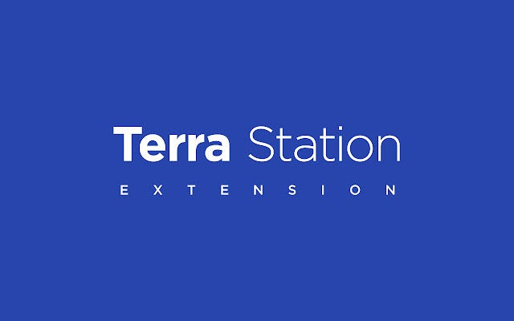

HTML Website Creator
What Is Terra Station
Terra Station, now officially rebranded as Station, is the primary non-custodial wallet and dashboard for the Terra blockchain ecosystem. Developed by Terraform Labs, it serves as the essential gateway for users to manage assets, participate in network security through staking, and engage in decentralized governance.
Since its evolution in early 2023, Station has transitioned from a single-chain wallet into a powerful interchain platform
Core Functionality and Asset Management
At its heart, Station is a non-custodial wallet, meaning users maintain full control over their private keys and digital assets. It is designed to store and manage the native LUNA token, along with various other ecosystem assets like CW20 tokens and NFTs.
Users can perform several critical on-chain activities directly within the application:
Sending and Receiving: A simple interface for transferring tokens globally.
Swapping: An integrated swap feature allows users to trade between different Terra-based assets at on-chain exchange rates.
Interchain Bridging: Leveraging the IBC (Inter-Blockchain Communication) protocol, Station enables the seamless movement of assets across various blockchains like Cosmos Hub, Juno, and Osmosis.
Staking and Network Security
Staking is a foundational feature of Station, allowing LUNA holders to contribute to the security of the Proof-of-Stake (PoS) network.
Delegation: Users can "delegate" their LUNA to professional validators who manage the network infrastructure.Rewards: In return for securing the network, delegators earn rewards derived from transaction fees (gas) and swap fees.
Unbonding Period: To ensure stability, there is typically a 21-day unbonding period; once you decide to unstake, your assets are locked and do not earn rewards for 21 days before they become liquid again.
Decentralized Governance
Station serves as a direct portal for on-chain democracy. Because Terra is a decentralized protocol, significant changes—such as software upgrades, community pool spending, or parameter adjustments—are decided by token holders.
Proposals: Any community member can view active proposals within the "Governance" tab.
Voting: One staked LUNA generally equals one vote. Users can choose between Yes, No, NoWithVeto (for spam), or Abstain. This ensures the network's direction is determined by its stakeholders rather than a central authority.
Ecosystem Connectivity and dApps
HTML Website Creator